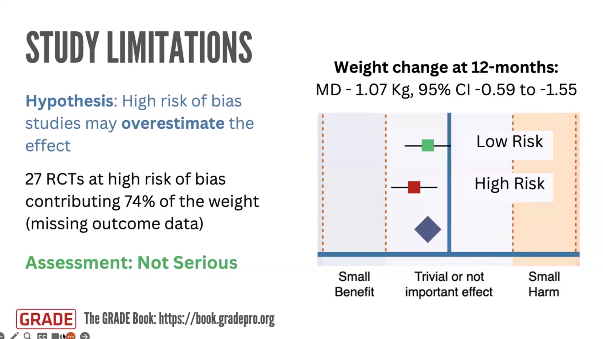
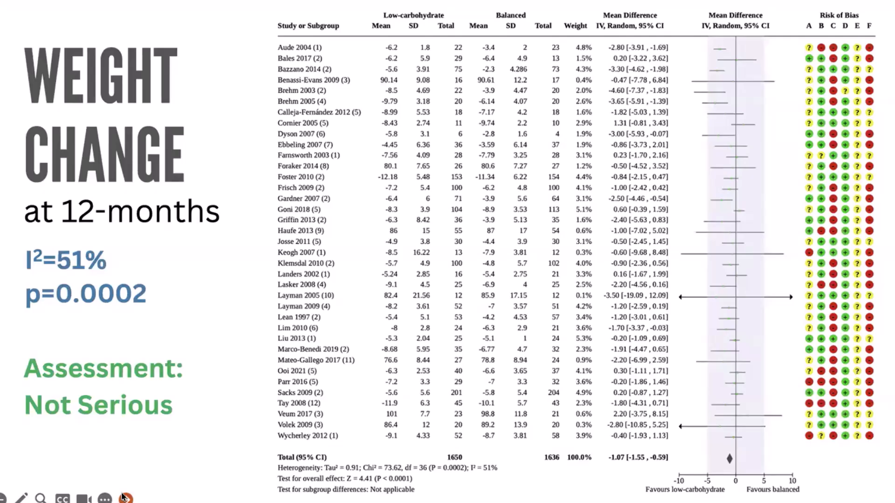

When to rate down the certainty of evidence: rating the impact on the effect estimate, not the concern
Module 4Professor Ignacio Neumannによる講義です。GRADEドメインで問題を見つけることと、 certaintyを実際に下げることを明確に分けます。懸念は頭の中に生じる主観的判断ですが、効果推定値が閾値を越えるかは、データと明示した仮定で検証できます。
対象はStudy limitationsとInconsistencyの例ですが、同じ論理をIndirectness、Imprecision、 Dissemination biasにも適用します。末尾には動画の全Q&Aを順番どおり再構成しました。
配布スライドと動画文字起こしに基づく日本語学習用の忠実な再構成であり、逐語訳ではありません。
- 閾値の本数と位置を決める。 trivial/small、small/moderate、moderate/largeを利益側・害側に置きます。
- ratingのtargetを決める。 pooled estimateが入る効果範囲をtargetにします。
- evidenceを評価する。 RoB、異質性、非直接性などの懸念を検出し、方向と大きさの仮説を立てます。
- rate down/upを決める。 仮説上の影響で真の効果がtargetの外へ動くかを検証します。
以前は3と4が一つに見え、「高RoB研究が多い→即格下げ」が起きやすい構造でした。 分離することで、問題の存在と意思決定上の重大性を混同しません。
Rationalistは「75%が高RoBなら結果は歪んでいるはずだ」と、方法論上の論理から推論します。 Empiricistは「では低RoB研究と高RoB研究の結果を実際に比べよう」と観察可能な証拠を求めます。 GRADEには両方が必要ですが、格下げ幅を決める場面では直接観察と感度分析を優先します。
懸念が大きいという感覚をそのまま1段階・2段階へ変換せず、 現実的な偏りを入れたとき効果が何本の意思決定閾値を越えるかを、第三者が確認できる形にします。

低炭水化物食とバランス食の12か月体重差は、37 RCT、3286人で約−1.07kg （95% CI −1.55〜−0.59）でした。事前閾値は5kgがtrivial/small、10kgがsmall/moderate、 20kgがmoderate/largeです。統計的には有意でも、targetはtrivial、すなわち重要でない差です。
高RoBの27試験が情報の74%を占めます。しかし低RoB群も高RoB群も5kg未満に収まり、 答えは同じでした。高RoB研究が利益を過大評価する仮説を認めても補正は効果をさらにゼロ側へ動かします。 Study limitationsはtargetへの確信を弱めず、格下げしません。

数字だけならInconsistencyで格下げしたくなります。しかしforest plot上の37試験はすべてtrivial範囲にあり、 違うのは「重要でない効果の程度」でした。
real inconsistencyは、研究によってsmall benefit、trivial、harmなど意思決定上の答えが変わる不一致です。この例はstatistical heterogeneityにとどまるため格下げせず、 「両食事間に重要な体重差はないことへのhigh certainty」としました。
同じ原因をStudy limitationsとInconsistencyの両方で二重に罰しません。 層別で差が出たなら、その差の原因を説明する最も適切なドメインで反映します。
- 結果を見る前に、効果範囲と閾値を明示する。
- 懸念を検出し、推定値をどちらへ動かすか仮説を書く。
- 可能なら低/高RoB、direct/indirect、subgroupなどを比較する。
- 比較不能なら、文献に照らした現実的な偏りの大きさを置く。
- 補正後推定値がtargetから何本の閾値を越えるか数える。
- 同じ範囲なら通常格下げなし、隣の範囲なら1段階、複数範囲なら2段階を検討する。
- 仮説、解析、採否、重複評価を避けた理由をEvidence Profileに残す。
Q1特定のRoBドメインごとにstratified meta-analysisを行うべきか？
場面は全研究が低RoB、低/高が混在、全研究が高RoBの三つです。混在時は層別が有用です。 I²=0なら整合の強い手掛かりですが、I²が高ければ原因を探索します。
盲検化など効果を動かすと事前に考えた少数のドメインに絞ります。多数の比較によるdata fishingを避け、 RoBとInconsistencyで同じ現象を二重に格下げしません。
Q210研究中1研究だけ低RoBで、異質性もほぼないなら、なぜ全研究のRoBを評価する必要があるか？
RoBは結果を見てから都合よく判定しないよう、原則として解析結果を見る前に全研究で評価します。 全体の限界は、今後どの設計の研究が必要か、どの改善を推奨するか、研究助成の優先順位を示す情報にもなります。
Q3全研究が高RoBで感度分析できない場合、デフォルトで格下げするか？
自動格下げはしませんが、ガイダンスはなお発展中です。偏りの方向と現実的な大きさを仮定し、 補正後推定値が何本の閾値を越えるかを試します。
強い仮定でも同じ範囲ならserious impactは考えにくく、隣または複数範囲へ動くならserious/very seriousです。 仮定を明示し、別の評価者が点検できるようにします。
Q4MIDが3・5・10kgから5・10・20kgへ変わるように、閾値が変動する問題をどう考えるか？
閾値が判断で変わるのは欠陥ではなく、価値観と文脈を透明化した結果です。暗黙に結果を見てから動かすことが問題です。 プロトコルで事前指定し、経験的研究、患者、意思決定者、専門家合意から根拠を示します。
閾値は選んだ物差しであり普遍定数ではありません。妥当な複数候補があれば感度分析で頑健性を示します。
Q5閾値が二つだけの場合、「trivialでなくなる境界」は何と呼ぶか？
「trivial effectとsmall effectの間のthreshold」と、両側の範囲を明示して呼びます。 二つの閾値だけでは効果分類が粗く、3段階の格下げを一貫して表現しにくくなります。
利益側・害側にsmall/moderate/largeの六つの閾値を置けば、越えた範囲を数えやすく、 自動化と用語の標準化にも向きます。
Q6点推定値はbenefitだが、「large benefitであるcertaintyはvery low」のような結果をどう伝えるか？
効果のtargetとcertaintyを分けます。点推定値がlargeでも、イベントが少ない、欠測が疑われる、 CIがsmallやtrivialまで広いならlarge effectへの確信は低いと明示します。
複数閾値ならCIがどの範囲まで含み、何本越えるかを示せます。 「利益がありそう」と「利益が大きいことに確信がある」を混同しません。
Q7観察研究のcertaintyがlow/very lowになりやすいのは、GRADEが役に立っていないということか？
いいえ。利用可能な研究から強い結論を出せないという本当の不確実性を表しています。 不確実でも意思決定は必要ですが、価値観、害、資源を慎重に扱い、どの研究が結論を変えうるかを示せます。 低いcertaintyは失敗ではなく、意思決定と研究優先順位の情報です。
Q8RCTでもdose-response gradientを理由にrate upできるか？
Dose-responseの考え方はRCTにも検討できます。ただし見かけの勾配が偶然、交絡、選択的報告で説明されないかを評価します。 「RCTだから絶対に対象外」「勾配があれば自動で加点」のどちらでもなく、現行guidanceに沿って Study limitationsを軽減する証拠として解釈します。
Q9時間内に扱えなかった二つの質問はどうなったか？
最後に残ったInconsistencyに関する質問とStudy limitationsに関する質問は、この回では回答されず、 今後の各テーマのセッションへ持ち越されました。動画上で回答がないため、ここでも推測の回答は補っていません。
引用文献
- 1.Cochrane Learning Live. When to rate down the certainty of evidence: rating the impact on the effect estimate, not the concern. June 2026. https://www.cochrane.org/events/when-to-rate-down-certainty-of-evidence-grade
- 2.YouTube recording. Professor Ignacio Neumann. https://www.youtube.com/watch?v=2FdvgUKS3b4
- 3.GRADEBook. Decision thresholds. https://book.gradepro.org/guideline/decision-thresholds
- 4.GRADEBook. Overview of the GRADE approach. https://book.gradepro.org/guideline/overview-of-the-grade-approach